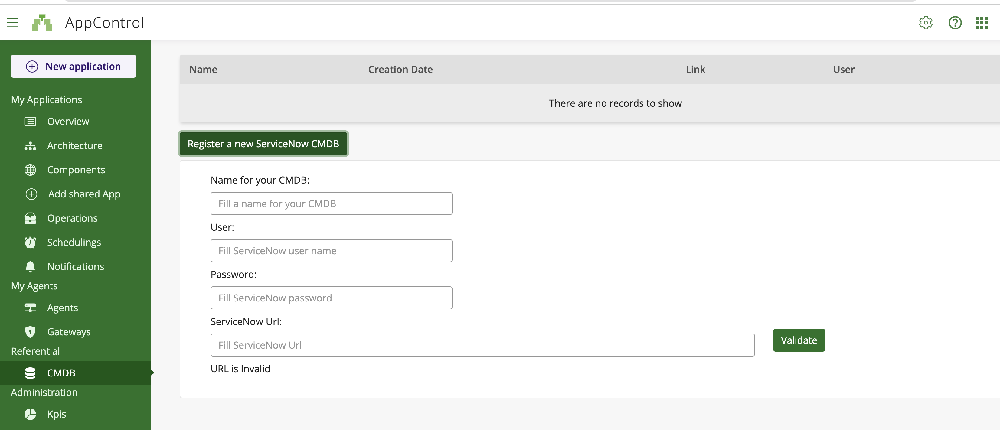

AppControl CMDB Integration
AppControl can be integrated with a Configuration Management Database (cmdb).
AppControl currently supports ServiceNow as a cmdb provider, but other providers such as iTop or EasyVista can also be considered.
Use Cases
There can be several use cases for integrating AppControl and a cmdb:
- conformity check between operational reality and cmdb referential
- map (eg: AppControl Application) provisioning based on cmdb data
Conformity check
In the first use case, whenever a map is loaded, AppControl checks whether the objects declared in the map are present in the cmdb, and produces a report listing the elements that were found missing.
Currently, nothing is ever added to the cmdb; a future version may offer the possibility for the user to choose whether to populate the cmdb with elements from the map.
Map provisioning
In the second use case, the cmdb acts as the configuration repository for AppControl artefacts, such as the Component. For example, the cmdb may hold a standard set of actions that are expected to be present in certain components: when the actions are found to be missing in the map, they can be copied from the cmdb, ensuring that the Components in the operational reality match the cmdb view of the world.
Eventually, it might be possible to generate entire maps from the cmdb, thereby ensuring automatic conformity.
Cmdb Integration HOWTO
Cmdb access and credentials
The first step is to define one or more cmdb objects in AppControl. In the Referential section at the bottom of the left-hand side panel, press the CMDB button to display the page where you can manage access to various CMDBs:

To register a new ServiceNow CMDB, press the register button and fill in the fields:
Nameis the local AppControl identifier for this cmdbUser/Passwordare your credentials on the ServiceNow serverServiceNow Urlidentifies the ServiceNow server you wish to use
Once a cmdb has been defined, you can reference it in the map import wizard, to request a validation of the map being imported.
Map Import Wizard
When importing a new map file, the fifth step is the CMDB validation, where you are presented with the list of available cmdbs.

Make sure the cmdb server you want to use is up and running at this point. Click on its name and press Next. A progress bar indicates that validation is taking place (this can take a few moments). If every element in the map is matched to a corresponding element in the cmdb, a message will indicate that the validation has succeeded:

If the verification process detected configuration information in the cmdb that was not in the map (such as Component actions) this will also be indicated:

If any discrepancies were found when comparing the map to the cmdb, a report is shown listing the elements that were found to be missing:

Understanding the ServiceNow integration
The following sections detail the mapping choices that were made to represent AppControl data in ServiceNow. Keep in mind that ServiceNow is very much configurable, and even lets you define custom data tables, so any integration might require specific work.
Mapping between AppControl and ServiceNow
The following table shows the correspondance between AppControl concepts or objects, and ServiceNow resources.
| AppControl | ServiceNow Object | ServiceNow Table |
|---|---|---|
| Application | Application | cmdb_ci_appl |
| Host | Computer | cmdb_ci_computer |
| Component | Service | cmdb_ci_service |
| Component hostref | Computer-Service Relation | cmdb_ci_rel |
| Action | Commands | cmdb_running_process |
Representing Components actions in ServiceNow
Each Component in AppControl has a mandatory hostref attribute linking to the
server where the component is hosted. This link is represented by a ServiceNow
Depends on::Used by relation.
The actions defined on a Component are stored in the RunningProcess table (cmdb_running_process), with a link to the corresponding host. Here's the detailed mapping on the fields of the RunningProcess table:
| AppControl Element | Field |
|---|---|
| name | action name :: component name |
| command | action value |
| parameters | application name |
| computer | hostref |
Example
AppControl XML map file:
<app name="inv_test_missing_from_map" version="1.0">
<component name="inv_pricing_001" description="An Invivoo component" group="A group"
hostref="inv_host_001" authref="LOCAL"redirectoutput="false" type="file">
<action value="sandbox.sh check inv_pricing_001" name="check" />
<action value="sandbox.sh enable inv_pricing_001" name="enable" />
<action value="sandbox.sh disable inv_pricing_001" name="disable" />
</component>
ServiceNow cmdb_running_process table record (extracts):
{
"command": "sandbox.sh check inv_pricing_001",
"computer": {
"link": "https://dev78474.service-now.com/api/now/v1/table/cmdb_ci_computer/8ba1aa202f7320102cd8d49df699b687",
"value": "8ba1aa202f7320102cd8d49df699b687"
},
"name": "check::inv_pricing_001",
"parameters": "inv_test_missing_from_map",
}
Populating your Cmdb
The cmdb can be populated by inserting individual objects using the cmdb provider's interface. But as the volume of data grows, populating your cmd can become a daunting task. Invivoo is developing tools to automate the creation of cmdb objects from AppControl maps [TO BE CONTINUED].